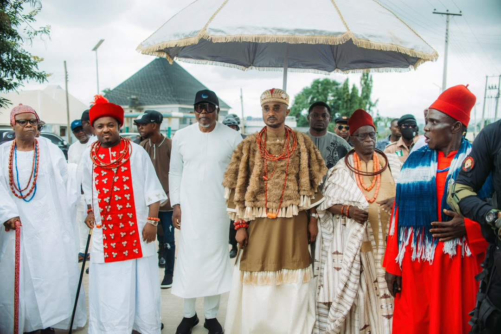
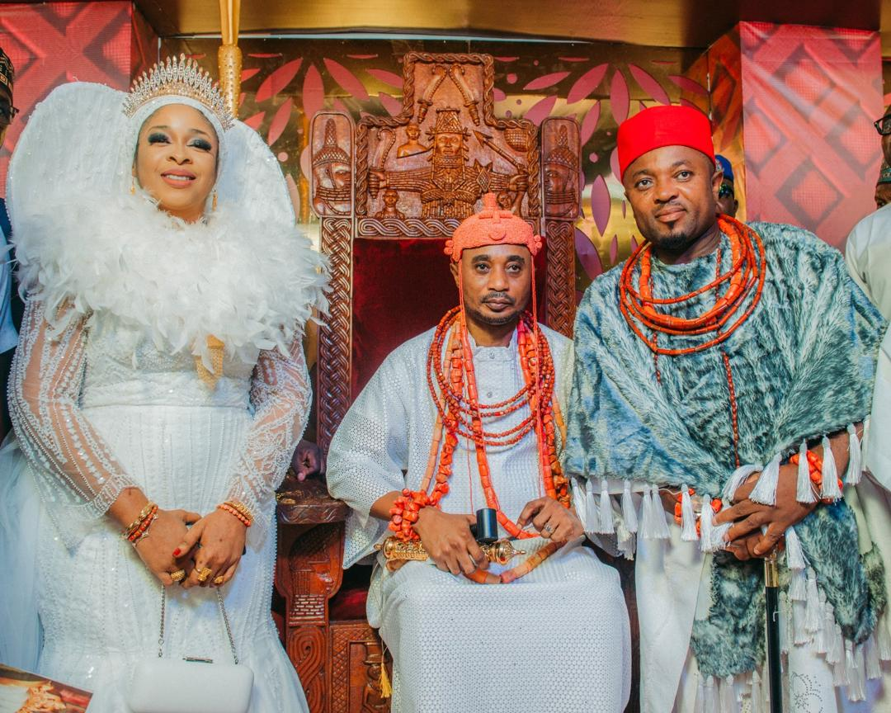
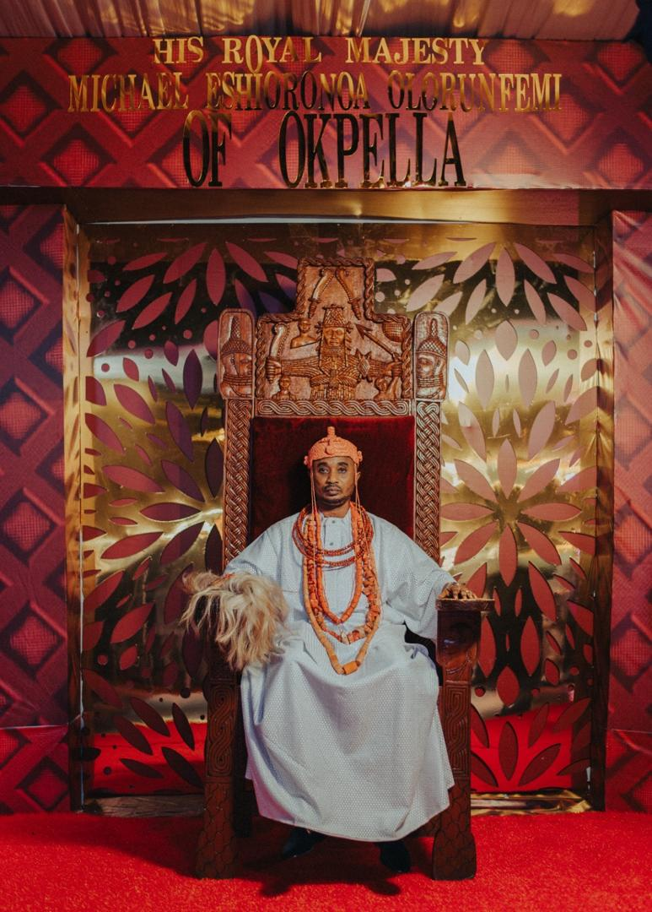
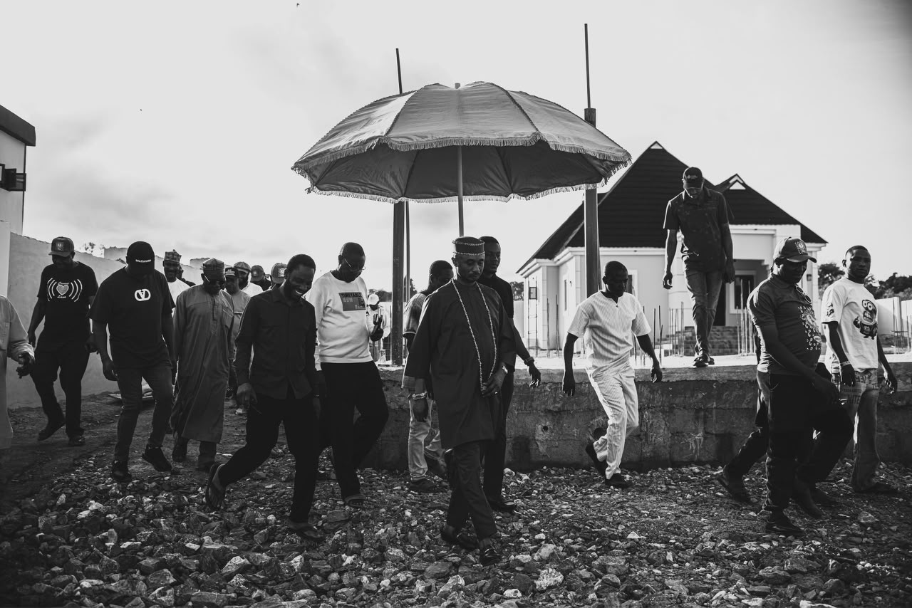
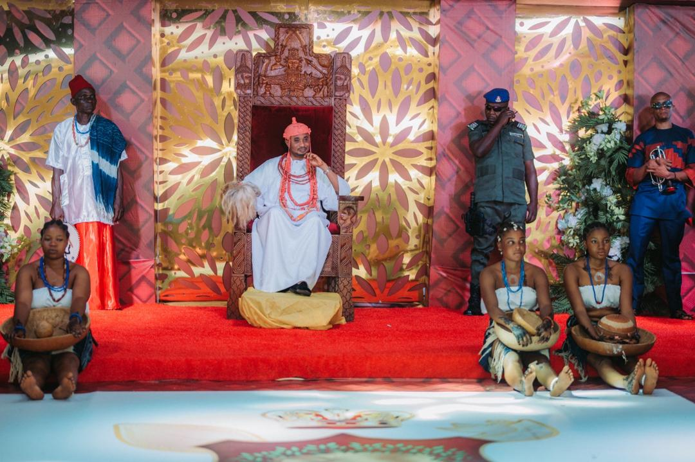
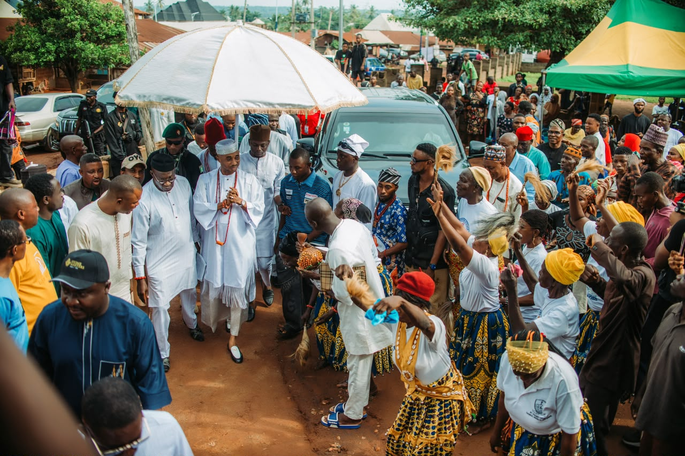

Preserving Our History, Celebrating Our Culture, Inspiring Future Generations.
Discover the remarkable history, enduring traditions, vibrant culture and timeless values that continue to define the identity of the Okpella people and unite the kingdom across generations.

The heritage of Okpella Kingdom is a remarkable blend of history, culture, tradition and enduring values that have shaped the identity of the Okpella people for generations. Nestled among the rolling hills of northern Edo State, the kingdom is renowned for its rich cultural legacy, resilient spirit and deep respect for the customs handed down by its ancestors.
For centuries, Okpella Kingdom has stood as a beacon of unity, dignity and communal harmony. The kingdom's traditions are deeply rooted in the principles of respect for elders, hospitality, integrity, courage and collective responsibility.
These timeless values continue to guide the lives of the people and serve as the enduring foundation upon which the kingdom has flourished, preserving its identity while inspiring future generations to uphold the rich cultural heritage of Okpella.
The institution of the Okuokpellagbe occupies a central place in the heritage of Okpella Kingdom. As the custodian of the kingdom's customs and traditions, the throne represents continuity, unity and the preservation of the identity of the Okpella people.
Through successive generations, the traditional institution has safeguarded the kingdom's history, promoted peaceful coexistence and ensured that the cultural values of the people remain vibrant, respected and relevant within a changing world.
Today, the throne continues to serve as a symbol of wisdom, stability and responsible leadership, strengthening the bond between the past, the present and the future while preserving the dignity and heritage of Okpella Kingdom.

The cultural heritage of Okpella Kingdom is beautifully expressed through festivals, ceremonies, music, dance, folklore and indigenous craftsmanship that continue to unite generations and preserve the identity of the kingdom.
Colourful celebrations that preserve history, strengthen community bonds and honour ancestral traditions.
Rhythmic performances that celebrate joy, storytelling and the cultural identity of the Okpella people.
Generations continue to preserve the wisdom, traditions and remarkable stories of the kingdom.
Indigenous artistry and craftsmanship reflect the creativity, skill and enduring traditions of the kingdom.
During festivals and important traditional occasions, the colourful display of traditional attire, rhythmic music, graceful dances and ancestral rites reflects the pride, unity and resilience of the Okpella people. These cultural expressions are far more than celebrations; they remain living testimonies of the kingdom's rich history, enduring identity and commitment to preserving its heritage for generations yet unborn.

Okpella Kingdom is blessed with a landscape of remarkable natural beauty, characterised by scenic hills, fertile lands and valuable mineral resources. These natural endowments have contributed significantly to the historical and economic development of the kingdom while strengthening the deep relationship between the people and their land.
Across generations, the people of Okpella have embraced responsible stewardship of their environment, recognising the land not merely as a source of livelihood but as an ancestral inheritance entrusted to their care.
This enduring respect for nature reflects the kingdom's commitment to preserving its environment, protecting its resources and ensuring that future generations continue to benefit from the rich blessings of the land.
One of the defining characteristics of Okpella Kingdom is its unwavering commitment to peace and communal solidarity. Throughout generations, the people have embraced dialogue, mutual respect and cooperation as essential values for maintaining harmony within their communities.
This culture of unity has enabled the kingdom to preserve its unique identity while adapting to changing social, economic and cultural realities. The spirit of togetherness continues to strengthen relationships among families, communities and the traditional institution.
Peace remains one of the greatest treasures of Okpella Kingdom. It provides the foundation upon which development, prosperity and cultural preservation continue to flourish for present and future generations.

While proudly preserving ancient customs, the people of Okpella Kingdom continue to embrace education, entrepreneurship, innovation and community development, creating a harmonious balance between tradition and modern progress.
Empowering future generations through learning, knowledge and academic excellence.
Encouraging creativity and technological advancement that supports sustainable growth.
Inspiring enterprise, economic opportunity and responsible leadership within the community.
Strengthening communities through collaboration, inclusion and shared responsibility.
Education, innovation and community development have become important aspects of the kingdom's modern heritage. While preserving ancient customs, the people of Okpella continue to embrace progress through learning, entrepreneurship, technological advancement and civic responsibility. This harmonious balance between tradition and modernity reflects the kingdom's vision for sustainable growth without losing sight of its cultural roots.

The heritage of Okpella Kingdom is ultimately defined not only by its remarkable history but also by the character of its people. Their resilience, generosity, industry and enduring commitment to preserving the values handed down through generations continue to shape the identity of the kingdom.
This rich heritage inspires pride among the sons and daughters of Okpella Kingdom, serving as a powerful source of identity, belonging and strength while encouraging future generations to uphold the values that have sustained the community for centuries.
Today, under the guidance of the traditional institution, the heritage of Okpella Kingdom continues to unite its people, honour the achievements of the past and inspire hope for a future built upon peace, cultural pride, unity and sustainable development.
Today, under the guidance of the traditional institution, the heritage of Okpella Kingdom remains a treasured legacy that unites its people, honours the achievements of the past and inspires hope for a future built upon peace, cultural pride, unity and sustainable development.
It stands as a lasting testament to the enduring spirit of a people whose traditions continue to enrich the cultural diversity of Edo State and Nigeria as a whole.